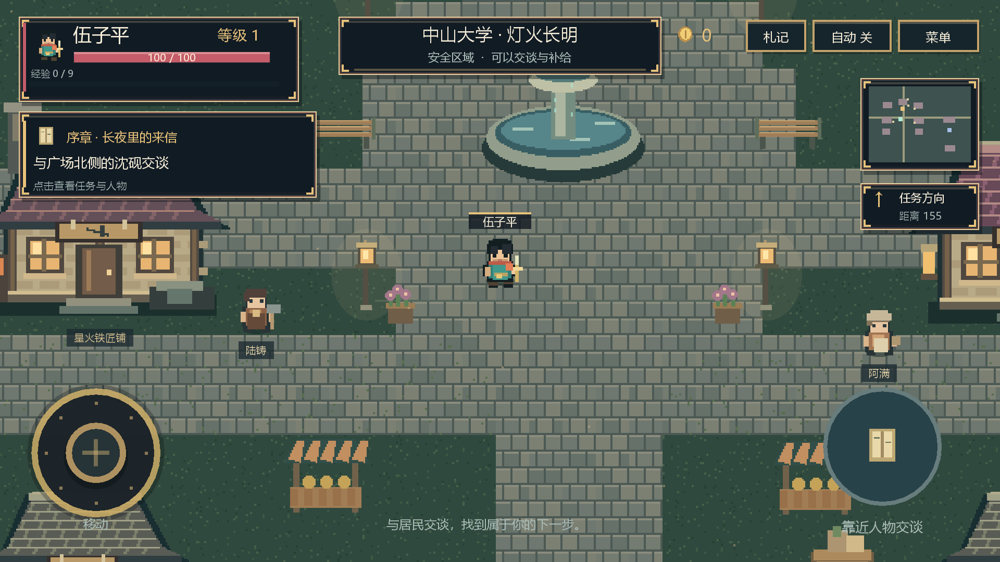

离线单机 · 进度保留伍子平 · 星火远征
从中山大学出发
走进体内八境，或去数学星庭走一回机关。原来的游戏存档还在。
进度自动保存。游戏里按返回键可回到这里。
正在读取草稿
东西都留在本机，断网也能用。挑一件想做的，随时按返回键回来。
东西都会自动存好。想把改动写回手机上的原文件，打开文件点「保存」就行。
收进来的星星只是隐藏，随时放回或打开，不影响任何草稿。
画画模式 · 手指涂写，双指捏合或滚轮缩放
写好代码点「运行」。Python、C++、JavaScript 都在本机跑，不联网。
程序要读输入时，先在「输入」页填好，一行一条。
离线单机 · 进度保留走进体内八境，或去数学星庭走一回机关。原来的游戏存档还在。
进度自动保存。游戏里按返回键可回到这里。
单指转视角 · 双指缩放/平移 · 点物体选中
组合预设（每个部件可单独编辑）
添加后切到「移动 / 旋转 / 缩放」拖彩色轴；「编辑」里可以拖顶点、多选面挤出/内插/删面。导入的模型会自动缩放到合适大小。
「合并为一个」把所有物体烘成单一网格（修改器会先固化）；工程文件（.tgscene）保存整个场景，可备份或发给别人，导入会替换当前场景，可撤销。
只导出显示中的物体。镜像、阵列、细分的效果会一并导出；灯光只照明，不进模型文件。编辑改动会实时保存，直接导出即可。
专注
今日 0 个 · 累计 0 个
设了开学日，才能算出"第几周"、自动过滤单双周。
基础医学自测题，供学习参考；临床请以最新教材与指南为准。
格式：JSON 数组或 JSONL，每条 {q, options[], answer, explain, subject, difficulty, tag}。导入自动去重，与内置题合并。
点按屏幕开始 · 跳跃躲障碍
AI 助手平时不联网。开启后，消息只发给你自己填的服务，密钥也只存在这台手机上。
打开其他应用、分享、短信草稿、剪贴板和写文件之前，需要你点「允许」。